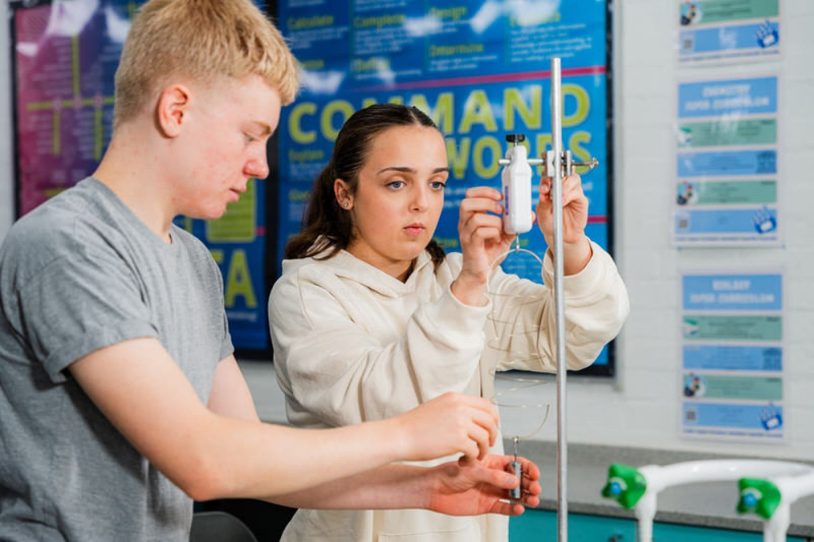
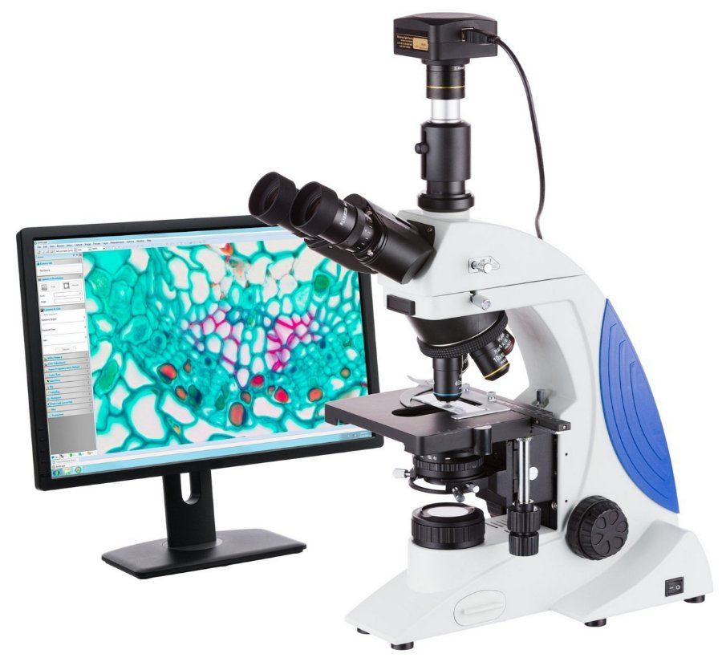
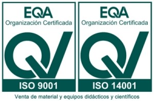
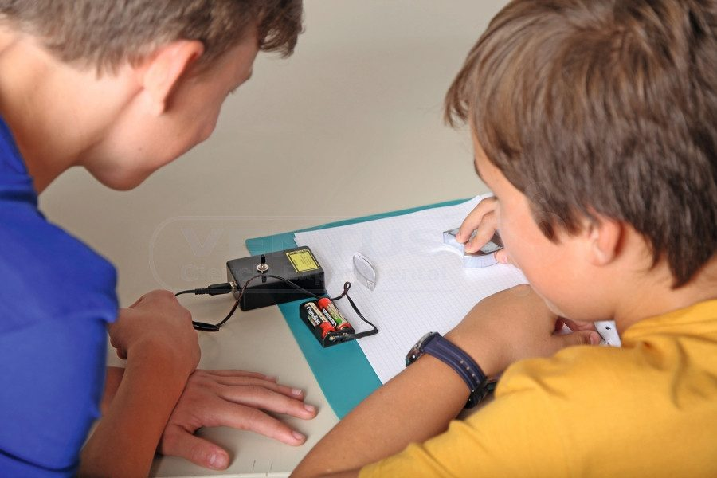
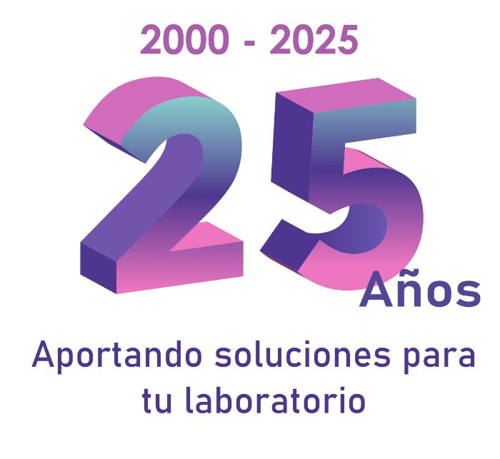
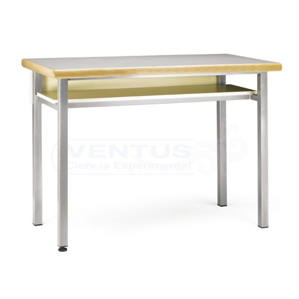

Material científico para la enseñanza
Equipa tu laboratorio
Física, química, biología y geología para colegios, institutos y universidades.
Ver el catálogoPortesGRATISdesde 200 € en península
Compra por asignatura
Novedades
Ver todasNuestros equipos, en clase
Equipos completos para las prácticas
Microscopios y lupas
Ver todos
Convierte tu microscopio en digital
Con una cámara en el ocular, la preparación sale en el ordenador o en el proyector de clase.
Todo el catálogo
- Portes pagados desde 200 €En península. Por debajo, 13 € de envío.
- Garantía mínima de 1 añoCon servicio postventa y mantenimiento.
- Diseño de laboratoriosTe asesoramos al montarlo o renovarlo.
- Equipo técnico que contestaPor teléfono, correo o WhatsApp.
Nuestros avales
- 2000Año en que empezamos a equipar laboratorios
- +7.000Clientes en España: colegios, IES, universidades y museos
- 21Países a los que exportamos
- 2.000Productos de física, química, biología y geología
Tenemos implantado un sistema de gestión basado en las normas de calidad y medio ambiente ISO 9001:2015 e ISO 14001:2015 para la venta de material y equipos didácticos y científicos.




Hablamos con tu departamento
Desarrollamos, fabricamos y vendemos material para los laboratorios de ciencias de centros de enseñanza. La mayoría de los productos están disponibles para entrega inmediata. Si estás montando un laboratorio nuevo o renovando el que tenéis, te ayudamos con el diseño, el mantenimiento y el servicio postventa.
- Dirección
- C/ Argentina, 2 · Nave A6
Polígono Industrial Casarrubios
28806 Alcalá de Henares (Madrid) - Teléfono y WhatsApp
- 91 802 35 62 · 644 105 529
- Correo
- Información: ventus@ventusciencia.com
Pedidos: pedidos@ventusciencia.com - Horario
-
Horario de atención Lunes a jueves 9:00 a 14:00 · 15:00 a 18:00 Viernes 9:00 a 15:00
Marcas que encontrarás
- VENTUS
- Frederiksen
- 3B Scientific
- DATA HARVEST
Material de laboratorio para centros educativos
Ventus Ciencia Experimental trabaja desde el año 2000 para los laboratorios de ciencias de colegios, institutos, ciclos formativos y universidades. Tenemos cerca de 2.000 productos de física, química, biología y geología, además de sensores para adquisición de datos, pilas de combustible, energías alternativas y mobiliario de laboratorio.
En la web tienes una selección del catálogo. Si buscas una referencia concreta o un equipo completo para tu centro, escríbenos y lo vemos con nuestro equipo técnico.